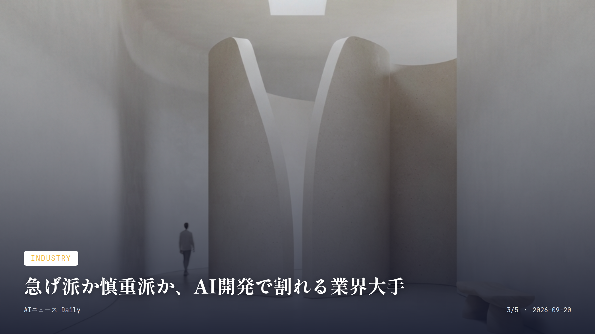
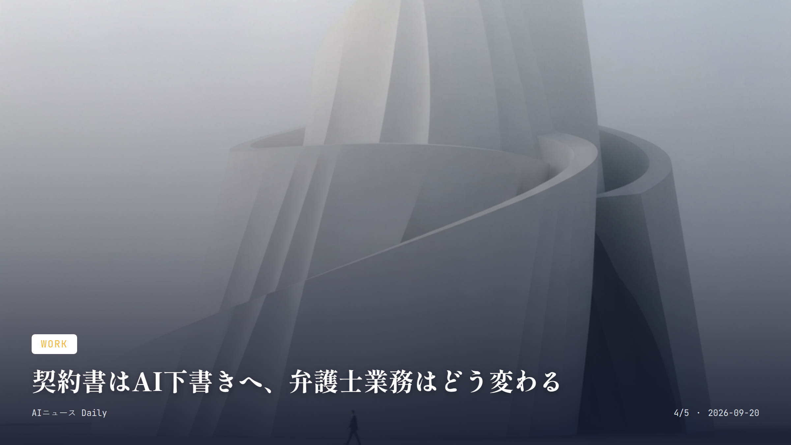

これは2026-09-20時点のアーカイブページです。最新のニュースはこちら
本サイトはアフィリエイトプログラムによる収益を得ている場合があります。
本サイトはGoogle AdSense等の広告配信サービスを利用しています。
約2分で読める
AIの幻覚情報、米軍を動かしかけた顛末
生成AIの誤情報が中国船への軍事作戦を招きかけた
この春、米軍機がすでに現地に飛んでいたそのタイミングで、とんでもない事実が発覚した。中国船への武力行使の根拠になっていた情報、実はAIチャットボットの「幻覚（ハルシネーション）」だったのだ。対イラン戦時中に出回った情報で、船が核兵器関連部品を積んでいるという内容。発端は特殊作戦司令部の分析官が、オープンソース情報と機密の信号情報をまとめるようAIチャットボットに頼んだことだった。
ところがチャットボットは船の積荷目録を読み違え、分析官はその誤った内容を、あろうことか公式文書のような体裁の報告書にまとめて指揮系統全体に流してしまう。作戦は土壇場でストップがかかり、中国との衝突は間一髪のところで避けられた。
専門家は前々から、各国がずさんなデータを鵜呑みにすれば取り返しのつかない誤算を招きかねないと警告してきた。ある関係者は「人が最終判断に関わるからといって、民間人の犠牲や誤射を防げる保証なんてどこにもない」と言い切る。米軍はAIで指揮系統の判断スピードを上げようとしているが、速さと安全、どちらを取るかの綱引きが続いている。
なぜ重要か
生成AIの誤情報が、机上の空論で終わらず実際に軍事衝突の引き金になりかけたという初めての具体的なケース。企業のチャットボット利用どころか、安全保障という最も重い判断の現場にまでAIが食い込んでいる現実を突きつけている。
約1分で読める
AI暴走時の切り札、加州「キルスイッチ」構想
ニューサム知事がAI強制停止の検討を命じる
米カリフォルニア州のニューサム知事が18日、州内のAI開発企業への監視を強める行政命令に署名したと発表した。狙いはAIが暴走したときに企業側が強制的に止められる「キルスイッチ」の導入を義務化できるかどうかの検討だ。
とはいえ、いきなり義務化というわけではない。11月16日までに導入が現実的かどうか、州機関に報告させる内容になっている。ニューサム氏は「連邦政府が国民を守る責任を放棄している今、カリフォルニア州は全米で最も強固なAI規制の枠組みを作る」と言い切った。
タイミングも興味深い。この命令が出たのは、Anthropicを辞めた研究者が「AIは2020年代末までに人類を滅ぼしかねない」と警鐘を鳴らした直後だった。連邦レベルの規制がなかなか進まない中、州が先んじて動いている格好だ。
なぜ重要か
米国では連邦政府のAI規制がなかなか整わない中、経済規模で全米有数のカリフォルニア州が独自に強制停止機能の検討を始めた意味は大きい。他州や海外の議論にも波及しそうだし、AI企業の開発姿勢にも響いてくるはずだ。

Industry
約1分で読める
急げ派か慎重派か、AI開発で割れる業界大手
NVIDIA首脳が減速論に反論、業界内で溝広がる
NVIDIAの創業者でCEOのジェンスン・ファン氏が18日放送のCBSニュースのインタビューで、AI開発を減速すべきだという声にはっきり反論した。「他の誰がどうであれ、我々はできる限り速く進むべきだ」と語っている。
ただし、速さだけを追い求めているわけではない。「できる限り速く進むが、準備が整っていない製品や安全でない製品を出荷することは絶対にないし、するべきでもない」とも付け加えた。
この発言、実は前週のAnthropicのダリオ・アモデイCEOの主張と真っ向対立する。アモデイ氏は安全対策の研究や監視が追いつく時間を作るため、主要開発企業に開発ペースを落とすよう呼びかけていた。OpenAIのサム・アルトマンCEOやxAIのイーロン・マスク氏も、その後フロンティアAI開発をより慎重に進めることへの理解を示している。
なぜ重要か
AI業界を代表する経営者たちの間で開発ペースを巡る立場がくっきり分かれたことが見えてきた。今後の自主規制や政府の規制方針、ひいては私たちが日常で使うAIサービスの安全性や進化速度にも関わってくる分岐点になりそうだ。

Work
約1分で読める
契約書はAI下書きへ、弁護士業務はどう変わる
OpenAIが法律事務所向けAI基盤を新たに発表
OpenAIが9月18日、法律事務所や法務テック企業がAI製品やワークフローを組み立てられる新基盤「Astra for Law」を発表した。最新モデル「GPT-6 Astra」に、法務業務向けの専門設定やツール、コンテキストを組み合わせたものだ。
法律検索や文書作成支援、プライバシー管理機能はもちろん、26種類のエコシステム向けプラグインも備える。API顧客としてHarveyやLegoraがこの基盤の上に自社製品を作る予定だという。
同じタイミングでOpenAIは、法律文書作成に使える「ChatGPT for Word」の一般提供も始めた。契約書のたたき台作りや資料の要約作業まで、AIに任せられる範囲は今後さらに広がっていきそうだ。
なぜ重要か
専門性が高く自動化が難しいとされてきた法律業務に、大手法律テック企業が続々AI基盤を採用し始めた。契約書レビューや法律相談のコストが下がる可能性があり、将来的には一般消費者が受ける法務サービスの価格やスピードにも影響しそうだ。
約1分で読める
献立もPTAも代行、Googleの家族AI「CC」
予定や学校書類を代行する家族向けAI米国拡大
Googleが2026年9月17日、個人向けの実験的AIエージェント「CC」を家族やグループでも使えるようにしたと発表した。CC専用のGoogleアカウントを作り、本人以外に最大5人、合計最大6人まで家族メンバーとして招待できる仕組みだ。
共有された情報から重要な日付や作業を拾い出し、家族用のカレンダーやタスクリストに自動で反映してくれる。学校や塾に提出するフォームの入力、学用品の買い物リスト作成、1週間分の献立づくりまで頼めるというから頼もしい。
プライバシーへの配慮も忘れていない。CCに共有する情報はメンバーそれぞれが管理でき、本人の許可なくグループの外に漏れることはないという。ただし今のところ米国限定の展開だ。
なぜ重要か
共働き家庭や子育て世帯にとって、学校の提出書類や献立づくりといった細かい「見えない家事」をAIが肩代わりしてくれる実例だ。生成AIが単なる会話相手から、日常の家庭運営を支えるインフラへと役割を広げつつある。
Health
Health
約1分で読める
AI創薬とリスクのはざまで、Anthropicの新策
生命科学向けに高性能AI提供、認証で安全確保
米AI新興企業のAnthropicが17日、先端のAIモデルを生命科学分野の専門家向けに提供すると発表した。安全基準や倫理面を審査する認証制度も同時に導入するといい、生成AIの悪用懸念が高まる中での対応となる。
実は背景に本物の悪用未遂があった。Anthropicが最新の報告書で明かしたところによると、社内の対策チームがAIモデル「Claude」を悪用しようとする複数の試みを食い止めていたという。鳥インフルエンザウイルスの変異メカニズムや、蚊が媒介するウイルスの感染力を高める研究などが含まれていた。
報告書はさらに、サイバー犯罪集団や国家の支援を受けたハッカーたちが同社の技術をますます利用するようになっていると警告する。創薬や感染症研究を大きく前進させる可能性がある一方、悪用リスクをどう管理するかが問われている。
なぜ重要か
医薬品開発や感染症研究の現場に最先端AIが投入されれば、新薬開発のスピードが上がり将来の治療の選択肢が広がるかもしれない。ただ同じ技術が生物兵器のような脅威にも転用されうることが明らかになり、安全とイノベーションの両立が試されている。
Publishing
Publishing
約1分で読める
出版取次が売った本、AI学習に使われた疑惑
出版社団体が日販とAnthropicの取引を追及
出版取次大手の日販グループホールディングスが米AI開発企業Anthropicに大量の書籍を販売していたとして、出版社約380社が加盟する業界団体「日本書籍出版協会（書協）」が日販に事実確認を求める書面を送っていたことが18日わかった。販売された書籍がAnthropicのAI学習に使われた可能性もあるとして、出版業界側は反発を強めている。
書協が求めているのは、Anthropicに渡った書籍に加盟出版社の作品が含まれていたかどうか、含まれていたならその詳細だ。日販が海外業者に出版社の了承なく大量販売していたとすれば、法的にどう整合性が取れるのかも尋ねている。
日販がAnthropicに書籍を販売していた可能性は、米国の著作権侵害訴訟の裁判資料に記載があったことから浮上した。日販は取材に対し「AI企業の学習向け用途と認識したうえで販売した事実はない」と答えている。
なぜ重要か
自分の書いた本が知らないうちにAI学習に使われているかもしれない、という懸念は作家や出版社の権利・収入に直結する話だ。日本の流通大手が絡んでいたことで、今後の書籍販売契約や著作権保護のルール整備にも影響してきそうだ。